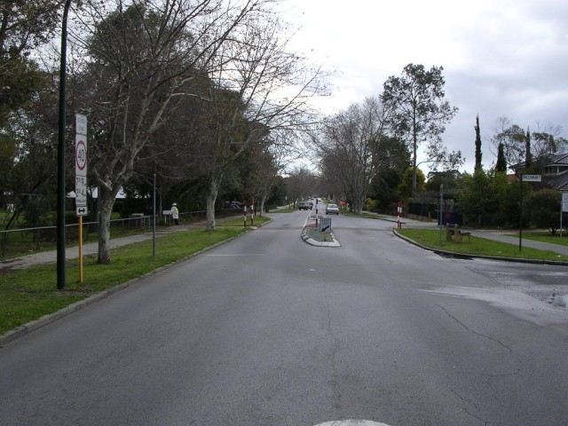
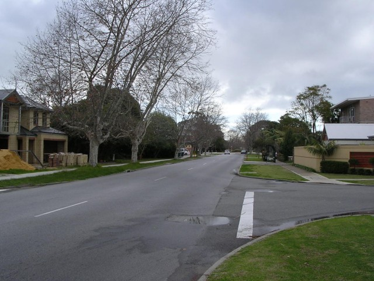
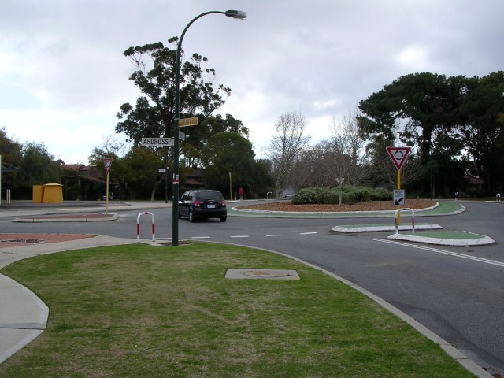
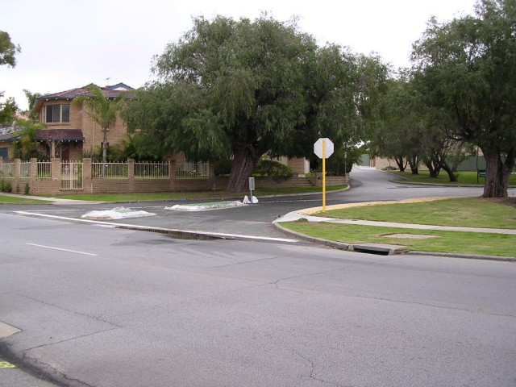
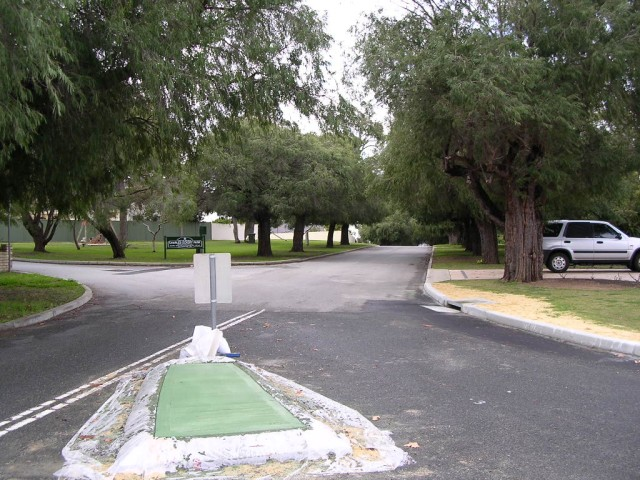
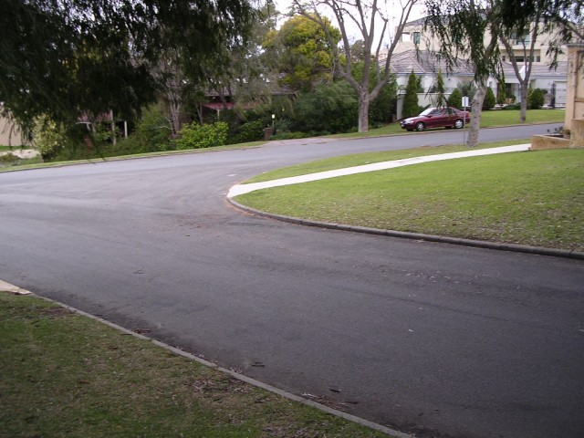
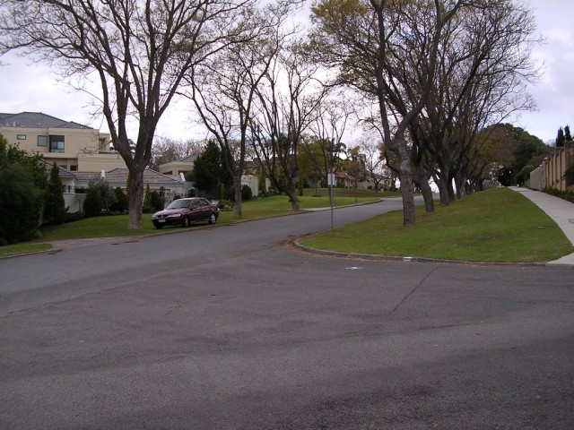
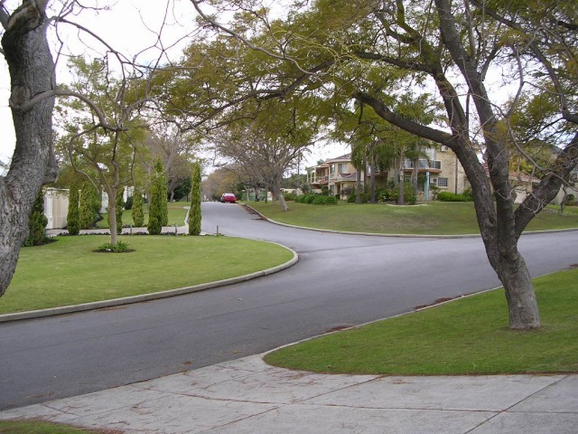

Numbers on the map represent the location where the photographs were taken. Scroll down to view the photographs.
Applecross - Kintail Road via Matheson Road and Ardross Street to Tweeddale Street
|| Contents || Kintail - Tweeddale | Duncraig | Canning Beach - Ogilvie || Home ||
Numbers on the map represent the location where the photographs were taken. Scroll
down to view the photographs.
Return to racingcircuits.net's Photo Archive Main Index

1 - Kintail Road start finish area. School on left.

2 - Kintail Road.

3 - Nowadays, a roundabout is located at the junction of Kintail Road and
Ardross Street.

4 - Right turn into Matheson Road.

5 - Matheson Road straight ahead.

6 - Right turn from Matheson into Ardross Street.

7 - Ardross Street.

8 - First left into Tweeddale Road.
Photographs and Text ©Neil Fackerell. Reproduced here with kind permission.